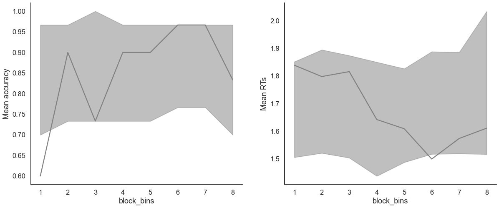

Fit the LBA on individual data
[1]:
import pandas as pd
from rlssm.utility.load_data import load_example_dataset
from rlssm.model.models_LBA import LBAModel_2A
Import individual data
[2]:
# import some example data:
data = load_example_dataset(hierarchical_levels = 1)
data.head()
[2]:
| participant | block_label | trial_block | f_cor | f_inc | cor_option | inc_option | times_seen | rt | accuracy | |
|---|---|---|---|---|---|---|---|---|---|---|
| 0 | 11 | 1 | 1 | 59 | 44 | 4 | 3 | 1 | 1.462756 | 1 |
| 1 | 11 | 1 | 2 | 53 | 44 | 4 | 2 | 1 | 1.256185 | 0 |
| 2 | 11 | 1 | 3 | 64 | 55 | 4 | 3 | 2 | 1.264878 | 1 |
| 3 | 11 | 1 | 4 | 47 | 36 | 3 | 1 | 2 | 1.399706 | 0 |
| 4 | 11 | 1 | 5 | 54 | 55 | 4 | 3 | 4 | 1.381221 | 1 |
Initialize the model
[3]:
model = LBAModel_2A(hierarchical_levels = 1)
15:10:04 - cmdstanpy - INFO - compiling stan file /home/andrei/PycharmProjects/rlssm/rlssm/stan_models/LBA_2A/LBA_2A.stan to exe file /home/andrei/PycharmProjects/rlssm/rlssm/stan_models/LBA_2A/LBA_2A
15:10:11 - cmdstanpy - INFO - compiled model executable: /home/andrei/PycharmProjects/rlssm/rlssm/stan_models/LBA_2A/LBA_2A
15:10:11 - cmdstanpy - WARNING - Stan compiler has produced 8 warnings:
15:10:11 - cmdstanpy - WARNING -
--- Translating Stan model to C++ code ---
bin/stanc --o=/home/andrei/PycharmProjects/rlssm/rlssm/stan_models/LBA_2A/LBA_2A.hpp /home/andrei/PycharmProjects/rlssm/rlssm/stan_models/LBA_2A/LBA_2A.stan
Warning in '/home/andrei/PycharmProjects/rlssm/rlssm/stan_models/LBA_2A/LBA_2A.stan', line 92, column 1: Declaration
of arrays by placing brackets after a variable name is deprecated and
will be removed in Stan 2.32.0. Instead use the array keyword before the
type. This can be changed automatically using the auto-format flag to
stanc
Warning in '/home/andrei/PycharmProjects/rlssm/rlssm/stan_models/LBA_2A/LBA_2A.stan', line 93, column 1: Declaration
of arrays by placing brackets after a variable name is deprecated and
will be removed in Stan 2.32.0. Instead use the array keyword before the
type. This can be changed automatically using the auto-format flag to
stanc
Warning in '/home/andrei/PycharmProjects/rlssm/rlssm/stan_models/LBA_2A/LBA_2A.stan', line 16, column 25: normal_log
is deprecated and will be removed in Stan 2.32.0. Use normal_lpdf
instead. This can be automatically changed using the canonicalize flag
for stanc
Warning in '/home/andrei/PycharmProjects/rlssm/rlssm/stan_models/LBA_2A/LBA_2A.stan', line 18, column 25: normal_log
is deprecated and will be removed in Stan 2.32.0. Use normal_lpdf
instead. This can be automatically changed using the canonicalize flag
for stanc
Warning in '/home/andrei/PycharmProjects/rlssm/rlssm/stan_models/LBA_2A/LBA_2A.stan', line 41, column 30: normal_log
is deprecated and will be removed in Stan 2.32.0. Use normal_lpdf
instead. This can be automatically changed using the canonicalize flag
for stanc
Warning in '/home/andrei/PycharmProjects/rlssm/rlssm/stan_models/LBA_2A/LBA_2A.stan', line 42, column 30: normal_log
is deprecated and will be removed in Stan 2.32.0. Use normal_lpdf
instead. This can be automatically changed using the canonicalize flag
for stanc
Warning in '/home/andrei/PycharmProjects/rlssm/rlssm/stan_models/LBA_2A/LBA_2A.stan', line 67, column 30: Use
of lba_cdf without a vertical bar (|) between the first two arguments of
a CDF is deprecated and will be removed in Stan 2.32.0. This can be
automatically changed using the canonicalize flag for stanc
Warning in '/home/andrei/PycharmProjects/rlssm/rlssm/stan_models/LBA_2A/LBA_2A.stan', line 71, column 30: Use
of lba_cdf without a vertical bar (|) between the first two arguments of
a CDF is deprecated and will be removed in Stan 2.32.0. This can be
automatically changed using the canonicalize flag for stanc
--- Compiling, linking C++ code ---
g++ -std=c++1y -pthread -D_REENTRANT -Wno-sign-compare -Wno-ignored-attributes -I stan/lib/stan_math/lib/tbb_2020.3/include -O3 -I src -I stan/src -I lib/rapidjson_1.1.0/ -I lib/CLI11-1.9.1/ -I stan/lib/stan_math/ -I stan/lib/stan_math/lib/eigen_3.3.9 -I stan/lib/stan_math/lib/boost_1.78.0 -I stan/lib/stan_math/lib/sundials_6.1.1/include -I stan/lib/stan_math/lib/sundials_6.1.1/src/sundials -DBOOST_DISABLE_ASSERTS -c -Wno-ignored-attributes -x c++ -o /home/andrei/PycharmProjects/rlssm/rlssm/stan_models/LBA_2A/LBA_2A.o /home/andrei/PycharmProjects/rlssm/rlssm/stan_models/LBA_2A/LBA_2A.hpp
g++ -std=c++1y -pthread -D_REENTRANT -Wno-sign-compare -Wno-ignored-attributes -I stan/lib/stan_math/lib/tbb_2020.3/include -O3 -I src -I stan/src -I lib/rapidjson_1.1.0/ -I lib/CLI11-1.9.1/ -I stan/lib/stan_math/ -I stan/lib/stan_math/lib/eigen_3.3.9 -I stan/lib/stan_math/lib/boost_1.78.0 -I stan/lib/stan_math/lib/sundials_6.1.1/include -I stan/lib/stan_math/lib/sundials_6.1.1/src/sundials -DBOOST_DISABLE_ASSERTS -Wl,-L,"/home/andrei/.cmdstan/cmdstan-2.30.0/stan/lib/stan_math/lib/tbb" -Wl,-rpath,"/home/andrei/.cmdstan/cmdstan-2.30.0/stan/lib/stan_math/lib/tbb" /home/andrei/PycharmProjects/rlssm/rlssm/stan_models/LBA_2A/LBA_2A.o src/cmdstan/main.o -Wl,-L,"/home/andrei/.cmdstan/cmdstan-2.30.0/stan/lib/stan_math/lib/tbb" -Wl,-rpath,"/home/andrei/.cmdstan/cmdstan-2.30.0/stan/lib/stan_math/lib/tbb" stan/lib/stan_math/lib/sundials_6.1.1/lib/libsundials_nvecserial.a stan/lib/stan_math/lib/sundials_6.1.1/lib/libsundials_cvodes.a stan/lib/stan_math/lib/sundials_6.1.1/lib/libsundials_idas.a stan/lib/stan_math/lib/sundials_6.1.1/lib/libsundials_kinsol.a stan/lib/stan_math/lib/tbb/libtbb.so.2 -o /home/andrei/PycharmProjects/rlssm/rlssm/stan_models/LBA_2A/LBA_2A
rm -f /home/andrei/PycharmProjects/rlssm/rlssm/stan_models/LBA_2A/LBA_2A.o
Fit
[4]:
# sampling parameters
n_warmup = 500
n_sampling = 500
n_chains = 2
n_thin = 5
[5]:
model_fit = model.fit(
data,
thin = n_thin,
iter_warmup=n_warmup,
iter_sampling=n_sampling,
chains = n_chains)
15:10:11 - cmdstanpy - INFO - CmdStan start processing
Fitting the model using the priors:
drift_priors {'mu': 1, 'sd': 5}
k_priors {'mu': 1, 'sd': 1}
sp_trial_var_priors {'mu': 0.3, 'sd': 1}
ndt_priors {'mu': 0, 'sd': 1}
drift_variability_priors {'mu': 1, 'sd': 1}
15:10:22 - cmdstanpy - INFO - CmdStan done processing.
Checks MCMC diagnostics:
n_eff / iter looks reasonable for all parameters
0 of 200 iterations saturated the maximum tree depth of 10 (0.0%)
E-BFMI indicated no pathological behavior
0.0 of 200 iterations ended with a divergence (0.0%)
Get rhat
[6]:
model_fit.rhat
[6]:
| rhat | variable | |
|---|---|---|
| name | ||
| lp__ | 0.997761 | lp__ |
| k | 1.015140 | k |
| sp_trial_var | 1.015530 | sp_trial_var |
| ndt | 0.993204 | ndt |
| drift_cor | 1.025230 | drift_cor |
| ... | ... | ... |
| log_lik[235] | 0.995173 | log_lik[235] |
| log_lik[236] | 0.996574 | log_lik[236] |
| log_lik[237] | 0.994769 | log_lik[237] |
| log_lik[238] | 0.994911 | log_lik[238] |
| log_lik[239] | 1.000240 | log_lik[239] |
1686 rows × 2 columns
Get WAIC
[7]:
model_fit.waic
[7]:
{'lppd': -215.04599879160781,
'p_waic': 3.892240387155754,
'waic': 437.87647835752716,
'waic_se': 29.315632534663862}
Save results
[8]:
model_fit.to_pickle()
Saving file as: /home/andrei/PycharmProjects/rlssm/docs/notebooks/LBA_2A.pkl
Posteriors
[9]:
model_fit.samples.describe()
[9]:
| transf_k | transf_sp_trial_var | transf_ndt | transf_drift_cor | transf_drift_inc | transf_drift_variability | |
|---|---|---|---|---|---|---|
| count | 200.000000 | 200.000000 | 200.000000 | 200.000000 | 200.000000 | 200.000000 |
| mean | 1.839728 | 1.441905 | 0.377720 | 2.272362 | 1.589044 | 0.749673 |
| std | 0.620611 | 0.674104 | 0.109018 | 0.688844 | 0.470559 | 0.241927 |
| min | 0.619713 | 0.162487 | 0.117633 | 0.882371 | 0.610564 | 0.240842 |
| 25% | 1.395320 | 0.968676 | 0.302152 | 1.745590 | 1.238690 | 0.581931 |
| 50% | 1.763500 | 1.343310 | 0.385110 | 2.209385 | 1.500390 | 0.719154 |
| 75% | 2.218960 | 1.836955 | 0.445925 | 2.739920 | 1.912740 | 0.896444 |
| max | 4.005270 | 3.473310 | 0.604554 | 4.416350 | 3.047190 | 1.555090 |
[10]:
import seaborn as sns
sns.set(context = "talk",
style = "white",
palette = "husl",
rc={'figure.figsize':(15, 8)})
[11]:
model_fit.plot_posteriors(height=5, show_intervals='HDI');

Posterior predictives
Ungrouped
[12]:
pp = model_fit.get_posterior_predictives_df(n_posterior_predictives=100)
pp
[12]:
| variable | rt | ... | accuracy | ||||||||||||||||||
|---|---|---|---|---|---|---|---|---|---|---|---|---|---|---|---|---|---|---|---|---|---|
| trial | 1 | 2 | 3 | 4 | 5 | 6 | 7 | 8 | 9 | 10 | ... | 230 | 231 | 232 | 233 | 234 | 235 | 236 | 237 | 238 | 239 |
| sample | |||||||||||||||||||||
| 1 | 1.693165 | 1.902963 | 1.487277 | 1.183152 | 1.298121 | 1.648833 | 1.252733 | 1.579188 | 1.639454 | 1.325097 | ... | 1.0 | 0.0 | 0.0 | 1.0 | 1.0 | 1.0 | 1.0 | 1.0 | 1.0 | 1.0 |
| 2 | 1.454376 | 1.296875 | 1.288511 | 1.521330 | 1.284421 | 1.398700 | 1.523004 | 1.724085 | 1.428141 | 1.513045 | ... | 0.0 | 1.0 | 1.0 | 1.0 | 1.0 | 1.0 | 1.0 | 1.0 | 1.0 | 1.0 |
| 3 | 1.310099 | 1.550863 | 1.455303 | 1.799894 | 1.506182 | 1.586193 | 1.346588 | 1.547969 | 1.438542 | 1.702133 | ... | 1.0 | 1.0 | 1.0 | 1.0 | 1.0 | 1.0 | 1.0 | 1.0 | 1.0 | 1.0 |
| 4 | 1.301761 | 1.658232 | 1.583796 | 1.586956 | 1.638872 | 1.633680 | 1.462750 | 1.674229 | 1.408486 | 1.591842 | ... | 1.0 | 0.0 | 0.0 | 0.0 | 1.0 | 1.0 | 1.0 | 1.0 | 1.0 | 1.0 |
| 5 | 1.508389 | 1.701388 | 1.649837 | 1.504857 | 1.700781 | 1.371294 | 1.685847 | 1.598446 | 1.404466 | 1.708828 | ... | 1.0 | 1.0 | 1.0 | 1.0 | 1.0 | 1.0 | 1.0 | 1.0 | 1.0 | 1.0 |
| ... | ... | ... | ... | ... | ... | ... | ... | ... | ... | ... | ... | ... | ... | ... | ... | ... | ... | ... | ... | ... | ... |
| 96 | 1.394518 | 1.281766 | 1.204888 | 1.265453 | 1.512276 | 1.531050 | 1.514394 | 1.750419 | 1.229132 | 1.205551 | ... | 1.0 | 1.0 | 1.0 | 1.0 | 1.0 | 0.0 | 1.0 | 1.0 | 1.0 | 1.0 |
| 97 | 1.814250 | 1.491318 | 1.660379 | 1.135034 | 1.718851 | 1.459324 | 1.492663 | 1.497887 | 1.569534 | 1.202619 | ... | 1.0 | 1.0 | 0.0 | 1.0 | 1.0 | 1.0 | 1.0 | 0.0 | 1.0 | 1.0 |
| 98 | 1.706058 | 1.546548 | 1.586624 | 1.614529 | 1.275392 | 1.962393 | 1.287594 | 1.465445 | 1.642311 | 1.722285 | ... | 1.0 | 1.0 | 1.0 | 1.0 | 1.0 | 1.0 | 0.0 | 1.0 | 1.0 | 0.0 |
| 99 | 1.785258 | 1.459177 | 1.776970 | 1.651715 | 1.685184 | 1.419596 | 1.470481 | 1.434782 | 1.363967 | 1.437656 | ... | 1.0 | 0.0 | 0.0 | 1.0 | 1.0 | 1.0 | 1.0 | 1.0 | 1.0 | 1.0 |
| 100 | 1.359884 | 1.606504 | 1.473639 | 1.535191 | 1.346491 | 1.639143 | 1.384854 | 1.371414 | 1.649957 | 1.632702 | ... | 1.0 | 1.0 | 1.0 | 1.0 | 1.0 | 1.0 | 1.0 | 1.0 | 1.0 | 1.0 |
100 rows × 478 columns
[13]:
pp_summary = model_fit.get_posterior_predictives_summary(n_posterior_predictives=100)
pp_summary
[13]:
| mean_accuracy | mean_rt | skewness | quant_10_rt_incorrect | quant_30_rt_incorrect | quant_50_rt_incorrect | quant_70_rt_incorrect | quant_90_rt_incorrect | quant_10_rt_correct | quant_30_rt_correct | quant_50_rt_correct | quant_70_rt_correct | quant_90_rt_correct | |
|---|---|---|---|---|---|---|---|---|---|---|---|---|---|
| sample | |||||||||||||
| 1 | 0.815900 | 1.506881 | 0.090940 | 1.465163 | 1.516061 | 1.569249 | 1.681783 | 1.809532 | 1.202057 | 1.320569 | 1.471750 | 1.615649 | 1.821377 |
| 2 | 0.974895 | 1.524620 | -0.088865 | 1.646729 | 1.656079 | 1.687289 | 1.719758 | 1.731679 | 1.311520 | 1.411978 | 1.526479 | 1.617892 | 1.717321 |
| 3 | 0.899582 | 1.500411 | 0.101180 | 1.522173 | 1.543227 | 1.574857 | 1.598814 | 1.722459 | 1.266971 | 1.371277 | 1.493742 | 1.571779 | 1.735415 |
| 4 | 0.907950 | 1.542380 | 0.077783 | 1.578516 | 1.674281 | 1.702402 | 1.721476 | 1.778359 | 1.271154 | 1.382164 | 1.527199 | 1.646209 | 1.783636 |
| 5 | 1.000000 | 1.510223 | 0.282133 | NaN | NaN | NaN | NaN | NaN | 1.359764 | 1.420596 | 1.488938 | 1.583493 | 1.674560 |
| ... | ... | ... | ... | ... | ... | ... | ... | ... | ... | ... | ... | ... | ... |
| 96 | 0.903766 | 1.483504 | -0.049382 | 1.518616 | 1.554548 | 1.590052 | 1.639551 | 1.679960 | 1.235786 | 1.343565 | 1.449838 | 1.597214 | 1.721766 |
| 97 | 0.945607 | 1.481258 | -0.044627 | 1.506861 | 1.560533 | 1.620913 | 1.687283 | 1.775614 | 1.159605 | 1.331281 | 1.477233 | 1.626482 | 1.776323 |
| 98 | 0.861925 | 1.528642 | -0.016929 | 1.438256 | 1.501325 | 1.580577 | 1.659805 | 1.737549 | 1.142393 | 1.327456 | 1.525686 | 1.702791 | 1.893376 |
| 99 | 0.891213 | 1.561589 | -0.143608 | 1.603221 | 1.619747 | 1.641722 | 1.665872 | 1.739506 | 1.346551 | 1.439885 | 1.548740 | 1.664568 | 1.756083 |
| 100 | 1.000000 | 1.500229 | 0.074384 | NaN | NaN | NaN | NaN | NaN | 1.360505 | 1.423669 | 1.496606 | 1.573833 | 1.652999 |
100 rows × 13 columns
[14]:
model_fit.plot_mean_posterior_predictives(n_posterior_predictives=100, figsize=(20,8), show_intervals='HDI');

[15]:
model_fit.plot_quantiles_posterior_predictives(n_posterior_predictives=100, kind='shades');

Grouped
[16]:
import numpy as np
[17]:
# Define new grouping variables, in this case, for the different choice pairs, but any grouping var can do
data['choice_pair'] = 'AB'
data.loc[(data.cor_option == 3) & (data.inc_option == 1), 'choice_pair'] = 'AC'
data.loc[(data.cor_option == 4) & (data.inc_option == 2), 'choice_pair'] = 'BD'
data.loc[(data.cor_option == 4) & (data.inc_option == 3), 'choice_pair'] = 'CD'
data['block_bins'] = pd.cut(data.trial_block, 8, labels=np.arange(1, 9))
[18]:
model_fit.get_grouped_posterior_predictives_summary(
grouping_vars=['block_label', 'choice_pair'],
quantiles=[.3, .5, .7],
n_posterior_predictives=100)
[18]:
| mean_accuracy | mean_rt | skewness | quant_30_rt_incorrect | quant_30_rt_correct | quant_50_rt_incorrect | quant_50_rt_correct | quant_70_rt_incorrect | quant_70_rt_correct | |||
|---|---|---|---|---|---|---|---|---|---|---|---|
| block_label | choice_pair | sample | |||||||||
| 1 | AB | 1 | 0.80 | 1.534562 | -0.186347 | 1.728193 | 1.319202 | 1.758502 | 1.508531 | 1.772696 | 1.610643 |
| 2 | 1.00 | 1.528863 | 0.283451 | NaN | 1.490206 | NaN | 1.536145 | NaN | 1.557814 | ||
| 3 | 0.85 | 1.577855 | -0.115510 | 1.549813 | 1.490936 | 1.550730 | 1.574247 | 1.628157 | 1.654209 | ||
| 4 | 0.90 | 1.623910 | -0.246256 | 1.649095 | 1.511793 | 1.676528 | 1.587238 | 1.703960 | 1.749424 | ||
| 5 | 1.00 | 1.525588 | -0.024913 | NaN | 1.452423 | NaN | 1.525061 | NaN | 1.606272 | ||
| ... | ... | ... | ... | ... | ... | ... | ... | ... | ... | ... | ... |
| 3 | CD | 96 | 0.95 | 1.507860 | 0.358764 | 1.747676 | 1.428625 | 1.747676 | 1.478917 | 1.747676 | 1.559225 |
| 97 | 0.95 | 1.581117 | -0.560141 | 1.528396 | 1.543824 | 1.528396 | 1.570441 | 1.528396 | 1.719674 | ||
| 98 | 0.90 | 1.474218 | 0.237693 | 1.576321 | 1.338095 | 1.625512 | 1.440581 | 1.674702 | 1.577617 | ||
| 99 | 0.90 | 1.581566 | -0.484731 | 1.651426 | 1.496155 | 1.681999 | 1.585303 | 1.712573 | 1.681528 | ||
| 100 | 1.00 | 1.471428 | 0.444475 | NaN | 1.409952 | NaN | 1.430162 | NaN | 1.538831 |
1200 rows × 9 columns
[19]:
model_fit.get_grouped_posterior_predictives_summary(
grouping_vars=['block_bins'],
quantiles=[.3, .5, .7],
n_posterior_predictives=100)
[19]:
| mean_accuracy | mean_rt | skewness | quant_30_rt_incorrect | quant_30_rt_correct | quant_50_rt_incorrect | quant_50_rt_correct | quant_70_rt_incorrect | quant_70_rt_correct | ||
|---|---|---|---|---|---|---|---|---|---|---|
| block_bins | sample | |||||||||
| 1 | 1 | 0.866667 | 1.538936 | -0.080940 | 1.726778 | 1.332940 | 1.777266 | 1.503743 | 1.809169 | 1.708005 |
| 2 | 1.000000 | 1.479032 | 0.309335 | NaN | 1.349146 | NaN | 1.424252 | NaN | 1.620771 | |
| 3 | 0.933333 | 1.484095 | -0.054575 | 1.570224 | 1.334003 | 1.601713 | 1.513079 | 1.633202 | 1.564252 | |
| 4 | 0.966667 | 1.511202 | 0.413283 | 1.593129 | 1.355346 | 1.593129 | 1.463328 | 1.593129 | 1.589374 | |
| 5 | 1.000000 | 1.542602 | 0.006582 | NaN | 1.446807 | NaN | 1.544260 | NaN | 1.630757 | |
| ... | ... | ... | ... | ... | ... | ... | ... | ... | ... | ... |
| 8 | 96 | 1.000000 | 1.514466 | -0.276282 | NaN | 1.483921 | NaN | 1.513852 | NaN | 1.558092 |
| 97 | 0.896552 | 1.526485 | -0.374503 | 1.512730 | 1.406130 | 1.513389 | 1.528486 | 1.538217 | 1.729295 | |
| 98 | 0.896552 | 1.450706 | 0.428468 | 1.525831 | 1.237706 | 1.529278 | 1.349474 | 1.581125 | 1.585942 | |
| 99 | 0.931034 | 1.611712 | -0.389879 | 1.622358 | 1.547153 | 1.627996 | 1.626622 | 1.633633 | 1.696974 | |
| 100 | 1.000000 | 1.505358 | -0.078567 | NaN | 1.441680 | NaN | 1.515855 | NaN | 1.553035 |
800 rows × 9 columns
[20]:
model_fit.plot_mean_grouped_posterior_predictives(grouping_vars=['block_bins'],
n_posterior_predictives=100,
figsize=(20,8));

[21]:
model_fit.plot_quantiles_grouped_posterior_predictives(
n_posterior_predictives=100,
grouping_var='choice_pair',
kind='shades',
quantiles=[.1, .3, .5, .7, .9]);